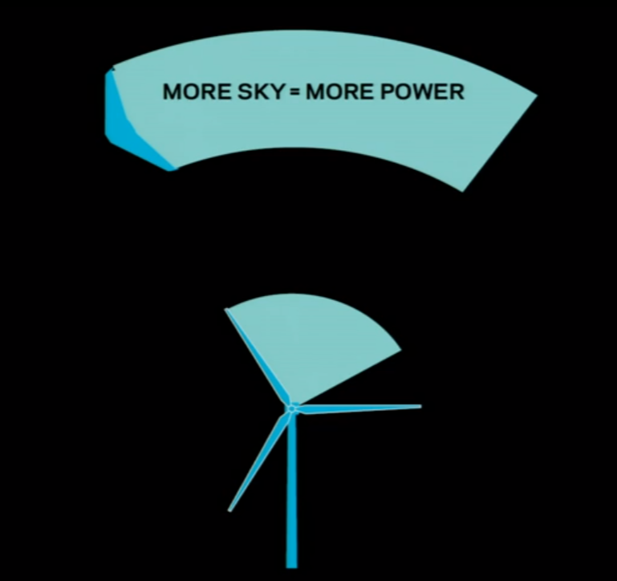
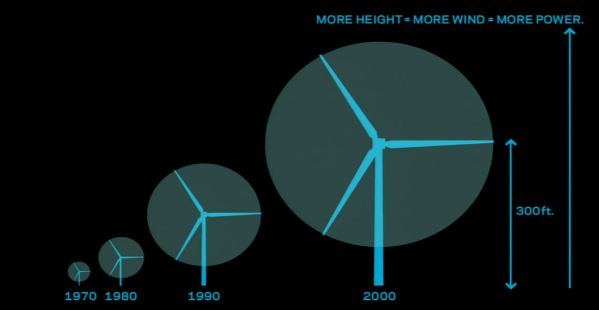

KITE POWER
A new wind power
|
V
Kites; A history.
Surely you’ve heard of kites? The ones with the string and the reel? Yeah those ones. Kites have been around for aeons, originally pioneered by the Chinese for transport and military purposes.
The Europeans found out about them (as they do everything) and started using them for transport to pull carts (hah! Take that romans!) and then the wright brothers took them and started using them to practice steering for their planes. These days we use kites for fun, racing and fighting.
|
V
Kites for Power
During the energy crisis of ’06, a small company called ‘Makani’ developed a kite that had an on-board generator that allowed it to generate power from the wind! They were partly funded by Google[x] a semi-secret subsidiary of google that funds small businesses that look to the future.
|
V
Power kites?
Power kites are like normal kites but have a generator mounted on them or on the ground which transforms the kinetic energy of them pulling to potential electrical energy. Power kites are a renewable power source because there will always be Wind, but not a renewable resource as we will not always be able to make them.
|
V

Power Kites.
Power kites fly up way above wind turbine height which allows them to generate more power as there is more wind.
They are used in areas with higher wind speeds which also have lower chances for earthquakes and storms.
|
V

|
V
Substantial kiting power for a new age.
These days there are no commercial power kites flying. This is mainly due to cost and unreliability, also its kind of different and people don’t like that. I say “BRING BACK THE POWER KITES!” and you can too, visit THIS POLL on your computer to vote to bring them back.
|
V
Thanks for Reading!
- Download Powerpoint -
Back To Top
Bonus Italian Diagram!